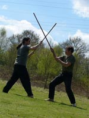

Links
HomeAbout
About Stáv
principles
martial aspects
healing aspects
philosophies
runes
stances
About Ice & Fire
Find Local Clubs
Join
Events
Worldwide Stáv Events
Contact Us
Blogs
Fall '06 Stáv Weekend Blog
Stáv Blog (Miki)
Products
CafePress Shop
Books/Memberships/Etc
Links
Ice and Fire UK
Stáv-International

What is Stáv
Stav Martial Arts
The Martial aspects of Stav are one of the most dynamic ways of exploring the principles of Stav. It is one thing to learn the theory of Stav, and quite another to be able to put them into a physical application.
Stav martial arts deal with the five principles, embodied through the class system. It uses the lessons each one teaches to allow us to respond to an attacker.
In their simplest form, these involve:
Backing off from the attacker
Standing firm to the attacker
Taking control of the attacker
Moving around the attacker
Walking through the attacker
Each has its place within a conflict, and each has value that needs to be explored and fully understood.
Each principle has its traditional weapon, including cudgel, axe, short sword, staff and spear. Training versions of these are used to teach the lines and principles involved.
Unarmed combat is also taught, but due to the nature of the combat it is harder to learn the principles through unarmed, so beginners are started with weapons and progress to unarmed as they gain in experience.